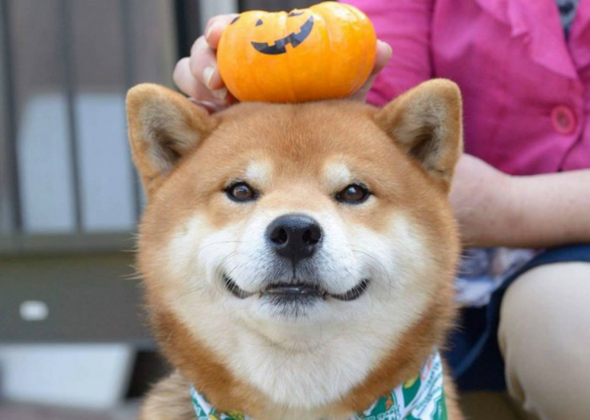

The Shiba Inu (柴犬) is the smallest of the six original and distinct spitz breeds of dog from Japan.[1] A small, agile dog that copes very well with mountainous terrain, the Shiba Inu was originally bred for hunting.[1][2] It looks similar to and is often mistaken for other Japanese dog breeds like the Akita Inu or Hokkaido, but the Shiba Inu is a different breed with a distinct blood line, temperament and smaller size than other Japanese dog breeds.
